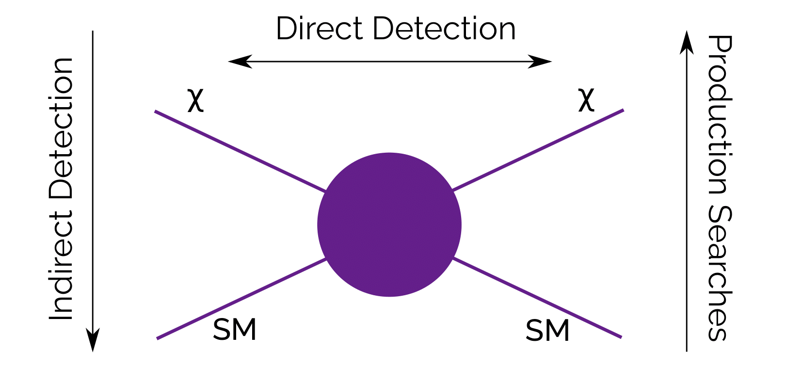
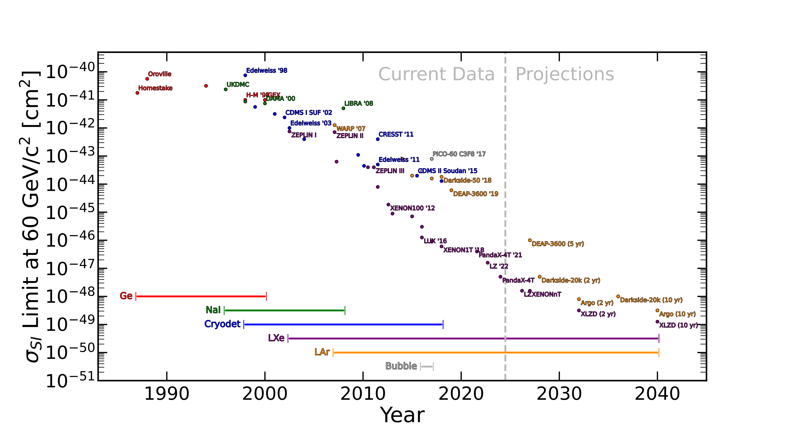

<!DOCTYPE html>
<html lang="en-us"
  dir="ltr">

<head><script src="/livereload.js?mindelay=10&amp;v=2&amp;port=1313&amp;path=livereload" data-no-instant defer></script>
  <meta charset="utf-8">
<meta name="viewport" content="width=device-width, initial-scale=1">
<meta name="description" content="Detection - {{ .Site.Title }}">

<meta name="ICBM" content="19.0760, 72.8777">
<meta name="geo.position" content="19.0760;72.8777">
<meta name="geo.region" content="IN-MH">
<meta name="geo.placename" content="Mumbai">
<title>Detection | Dan Hunts For WIMPs</title>


      <link rel="stylesheet" href="/css/custom.css" type="text/css">
      <link rel="stylesheet" href="/css/tailwind.css" type="text/css">

</head>

</html>

<body class="bg-gradient-to-r from-slate-900 to-slate-800 font-mono text-white"> <div class="container mx-auto flex flex-col px-4 xl:w-8/12 sm:max-w-full"> 
  

  <header class="flex flex-row py-4" >

  


  <nav
    class="flex flex-row items-center w-full justify-between">


  
  
    <div class="flex flex-col gap-1">
      <a href="//localhost:1313/" class="text-4xl font-bold hover:text-sky-400 whitespace-nowrap">Dan Hunt</a>
      <p>Studying the direct detection of dark matter</p>
    </div>
  

  <div class="dropdown-menu flex flex-row absolute max-lg:w-full max-lg:items-center max-lg:justify-center max-lg:-top-full lg:static max-lg:bg-slate-900 max-lg:h-[calc(100dvh)] max-lg:left-0">
    <ul class="flex flex-col lg:flex-row gap-2">
      
  <li class="font-bold border border-sky-400 px-3 py-2 hover:bg-sky-400 focus:text-sky-400 text-center">
    <a href="/about">About Me</a>
  </li>

  <li class="font-bold border border-sky-400 px-3 py-2 hover:bg-sky-400 focus:text-sky-400 text-center">
    <a href="/darkmatter">Dark Matter</a>
  </li>

  <li class="font-bold border border-sky-400 px-3 py-2 hover:bg-sky-400 focus:text-sky-400 text-center">
    <a href="/detection">Detection</a>
  </li>

  <li class="font-bold border border-sky-400 px-3 py-2 hover:bg-sky-400 focus:text-sky-400 text-center">
    <a href="/cv.pdf">CV</a>
  </li>

  <li class="font-bold border border-sky-400 px-3 py-2 hover:bg-sky-400 focus:text-sky-400 text-center">
    <a href="/lz">LZ</a>
  </li>

  <li class="font-bold border border-sky-400 px-3 py-2 hover:bg-sky-400 focus:text-sky-400 text-center">
    <a href="/othersearches">Other Searches</a>
  </li>

    </ul>
  </div>
  <div class="open-dropdown-button lg:hidden">
    <svg xmlns="http://www.w3.org/2000/svg" viewBox="0 0 448 512" width="32" height="32" fill="white">
      <path
        d="M0 96C0 78.3 14.3 64 32 64H416c17.7 0 32 14.3 32 32s-14.3 32-32 32H32C14.3 128 0 113.7 0 96zM0 256c0-17.7 14.3-32 32-32H416c17.7 0 32 14.3 32 32s-14.3 32-32 32H32c-17.7 0-32-14.3-32-32zM448 416c0 17.7-14.3 32-32 32H32c-17.7 0-32-14.3-32-32s14.3-32 32-32H416c17.7 0 32 14.3 32 32z" />
    </svg>
  </div>
  <div class="close-dropdown-button hidden z-50">
    <svg xmlns="http://www.w3.org/2000/svg"
      viewBox="0 0 384 512" width="32" height="32" fill="white">
      <path
        d="M342.6 150.6c12.5-12.5 12.5-32.8 0-45.3s-32.8-12.5-45.3 0L192 210.7 86.6 105.4c-12.5-12.5-32.8-12.5-45.3 0s-12.5 32.8 0 45.3L146.7 256 41.4 361.4c-12.5 12.5-12.5 32.8 0 45.3s32.8 12.5 45.3 0L192 301.3 297.4 406.6c12.5 12.5 32.8 12.5 45.3 0s12.5-32.8 0-45.3L237.3 256 342.6 150.6z" />
    </svg>
  </div>
</nav>


</header>

  <div class="flex flex-col pt-8 gap-10 w-full">
    
    <div class="flex flex-col w-full gap-4">
      <h2 class="text-3xl font-bold">Detection</h2>
      <div class="flex flex-col gap-4 w-full">
        <hr />
        <div class="prose prose-invert max-w-full">
  <p>So, how do we place limits on dark matter? Well, we can &lsquo;make it&rsquo;, &lsquo;shake it&rsquo;, or &lsquo;break it&rsquo;. Imagine an interaction between dark matter and regular matter, in any direction:</p>
<p></p>
<h1 id="break-it">Break it</h1>
<p>Take this diagram from the bottom upwards: two standard model particles come in, two dark matter particles come out. This is how the LHC and the ATLAS experiment work: fire protons at one another, look to see if anything interesting comes out. They found the Higgs, and haven&rsquo;t found much since.</p>
<h1 id="make-it">Make it</h1>
<p>Now take it from the top downwards: dark matter interacts with itself and produces standard model particles. This is how the Cern Axion Solar Telescope works, as well as some doodads on the ISS: search space for signals, and if you find more than you expect, it&rsquo;s dark matter.</p>
<h1 id="shake-it">Shake it</h1>
<p>Now imagine dark matter hits a SM particle and simply bounces off, dumping some energy in it in the process. We&rsquo;d call this direct detection. This is where I come in.</p>
<h1 id="hows-it-been-going">How&rsquo;s it been going?</h1>
<p>Pretty good! We haven&rsquo;t <em>found</em> dark matter yet, but we can place good limits. Some of these can be funny: a paper a few years back worked out that dark matter of a high enough mass couldn&rsquo;t interact more than a certain amount, because if it did, we&rsquo;d have seen evidence for it in hospital records. &ldquo;Death and serious injury by dark matter&rdquo;.</p>
<p>Typically, we replace the human being hit by dark matter in that example with a solid material - a noble element, since it&rsquo;s stable. We started with Germanium, then Sodium Iodide, and now Argon and Xenon. And over the years, we&rsquo;ve gotten more sensitive to lower cross sections (probabilities of interacting).</p>
<p></p>
<p>See the &lsquo;LZ&rsquo; on there in purple? That&rsquo;s what I work on, and &lsquo;XLZD&rsquo; is what we&rsquo;re working towards.</p>

</div>
      </div>
    </div>
    <div class="footer flex items-center justify-center">
  <div class="py-4">
  <footer>
    <p class="whitespace-nowrap">© 2024. All rights reserved.</p>
  </footer>
</div>
</div>
  </div>
 </div> 
      <script type="text/javascript" src="/js/navbar.js"></script>
 <script id="dsq-count-scr" src="//nayanseth.disqus.com/count.js" async></script>  </body>
